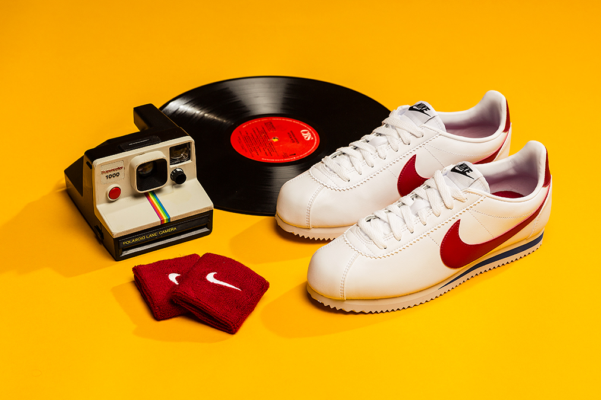

Il primo modello Cortez Nike da running torna con il suo classico design semplice e pulito, che le ha permesso di varcare i confini della pista e diventare un’icona di stile.
Nata in pista e ideata da Bill Bowerman, la Cortez Original rende omaggio alle origini di Nike nel mondo della corsa.

STYLE TIP #1Assumi una posa convincente e sentiti protagonista.

STYLE TIP #2Gli occhiali con montatura over sono il top, ma ricorda la montatura sottile! Provali anche con lenti colorate blu e rosse e abbinale alle tue Cortez OG..